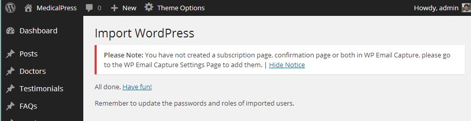
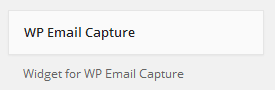
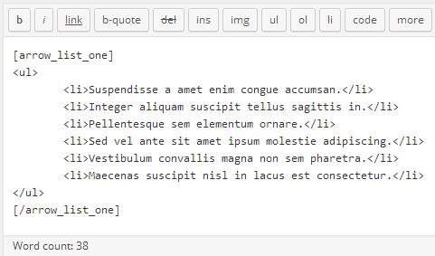
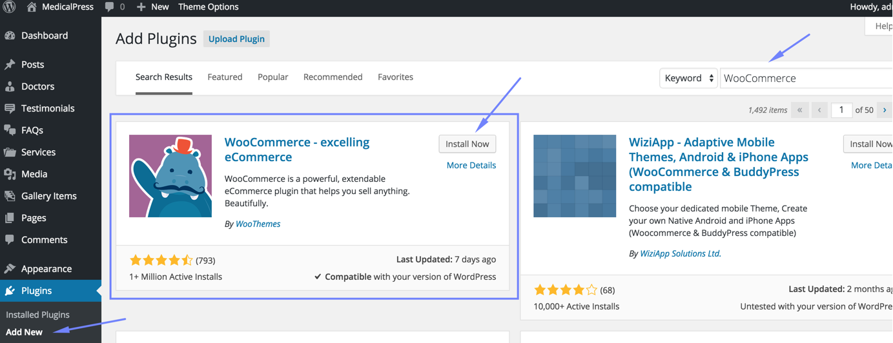

Introduction
This documentation is last updated on 6th October 2015.
Thank you for purchasing MedicalPress WordPress Theme . If you have any question that is beyond the scope of this documentation, Please feel free to create a support ticket using Our Support Site.
Disclaimer:
We offer limited support for theme customers. We only provide support for our themes and their core features. We cannot guarantee our themes will work properly with all third party plugins and server environments. If you plan on adding numerous plugins to this theme then please note, We cannot facilitate support for any conflicts that might arise with this theme's default functionality. The MedicalPress WordPress theme is presented as it is.
Themeforest Item Purchase Code to Signup on Support Site
Please visit this knowledge base article to learn about how to get item purchase code from themeforest to signup on our support site.
Updating WordPress Theme
If this is a theme update and you want to apply it on your existing installation then please visit this knowledge base article to learn about a better way to update your theme
If you like this theme, Please support us by rating this theme with 5 stars (How to rate?)
{kind=link}
Install Theme
In start you must have a working version of WordPress already installed. For information in regard to installing the WordPress CMS, please see the WordPress Codex Installing WordPress
Once you have a working of version of WordPress, you need to download All Files and Documentation from themeforest and extract the downloaded zip to get various files including inspiry-medicalpress.zip.
{kind=link}
Install Theme Via WordPress Dashboard
- Go to 'Appearance > Themes' section
- Click 'Add New' and select the 'Upload Theme' option
- Choose the inspiry-medicalpress.zip file and press 'Install Now'
- Once the theme is uploaded you need to activate it.
if you face any problem during upload through dashboard, please upload the theme using FTP as guided below.
Install Theme Via FTP
- Access your hosting server using an ftp client like FileZilla
- Go to the 'wp-content/themes' folder of your WordPress installation
- Extract the inspiry-medicalpress.zip file and put the inspiry-medicalpress folder in 'wp-content/themes/' folder
- Go to 'WordPress Dashboard > Appearance > Themes' section to activate the theme
Install Plugins
After you have installed and activated the theme, there'll be a list of required plugins at the top of the WordPress dashboard.If you already hide it out, you can go to 'Appearance > Install Plugins' section instead.
So, you need to install and activate these plugins as demonstrated below.
Step 1
Step 2
Install Child Theme
It is better to use child theme as if you need to modify anything you modify in child theme only. This way you can easily update your parent theme whenever new update becomes available on themeforest. You can read more about child theme from here.
To install child theme, you need to upload the inspiry-medicalpress-child.zip and activate it in the same way as you uploaded and activated the parent theme's inspiry-medicalpress.zip.
Auto Import Demo Contents
Demo Importer will help you setup your site like the theme demo, With only one click.
Note: Just make sure all the required plugins are installed.
Go to Theme Options > Demo Importer and press Import Demo button, As pointed in screen shot below.
Now wait, It can take few minutes as images are fetched from remote server. You can visit your site once done.
Some time import process can become freezed/halted due to delays in fetching data from remote server.
You can verify this by visiting media library in a new tab and analysing the number of images imported.
In this case, Simply refresh theme options and re-click the demo import button as it will not add duplicate entries
and simply resume from where it halted last time. It only adds duplicate entries in menu and those can be removed easily.
If demo import process totally fails then you can try fallback demo import as that is hosted on a different server.
For any further help you can create a support ticket on our support site.
Import XML for Demo Contents
You do not need to follow this section if you have already imported demo contents using Auto Import Demo Contents feature.
Importing demo contents and making your site one step closer to the theme demo requires following steps.
- Importing XML file
- Configuring Menus
Look for Import XML folder in unzipped package downloaded from themeforest and use the XML within it.
Go to the WordPress Admin > Tools > Import and click WordPress as displayed in image below.

At 1st time you need to install WordPress importer plugin

Once installed you need to activate the plugin and run the importer.
Select the XML file from demo directory under Import XML directory in unzipped package that you have downloaded from themeforest.
After importing XML file.
- Assign posts to an existing author.
- Mark the checkbox to download and import file attachments
- Click 'Submit' button
After that is done, you will have bunch of posts, pages, doctors, gallery items, services and other contents as on the theme demo.
Next step is to configure menu.
Configure Menus
Navigate to Appearance > Menus and use the Already Imported Menu from XML and assign it to theme location "Main Menu" from Menu Settings section below menu. After that save the menu. As pointed in screenshot below.

Import Theme Options
There are two ways to import demo theme options.
1st Way - Import from File
- Go to WordPress Admin > Theme Options > Import/Export
- Click 'Import from file' button, It will display an import text box.
- Look for file named "demo-theme-options-for-import.txt" into Import Theme Options folder in unzipped package downloaded from themeforest
- Open the file in a text editor and copy all its contents.
- Paste all those contents into import text box as displayed below.
- Press 'Import' button
- Press 'Save Changes' button once the theme options are imported.
2nd Way - Import from URL
- Go to WordPress Admin > Theme Options > Import/Export
- Click 'Import from URL' button
- Copy this import URL and paste it into the URL field
http://medicalpress-min.inspirythemes.biz/wp-admin/admin-ajax.php?action=redux_download_options-redux_demo&secret=19a70075b0eb105a5530ed121e177ee9
- Press 'Import' button
- Press 'Save Changes' button once the theme options are imported.
Create Home Page
In case of imported XML the home page is already created and you do not need to follow this section.
To set up the Home page you need to create a new page,
Go to Pages > Add New. You can give this page a title "Home" yet you do not need to include any contents for now.
Select the “Home Template” template from the Page Attributes section, as displayed in screen shot below and click “Publish”.

Create News Page
In case of imported XML the news page is already created and you do not need to follow this section.
To set up the News page you need to create a new page,
Go to Pages > Add New. You can give this page a title "News" yet you do not need to include any contents for now.
Select the “Default Template” template from the Page Attributes section, as displayed in screen shot below and click “Publish”.
Configure Reading Settings
I am assuming that you have imported the XML successfully and you have home page and news page available for use. If this is not the case then simply create a new page using Home Template and name it as Home after that create another page using default template and name it as News.
To configure reading settings you need to visit WordPress Admin > Settings > Reading and choose that front page displays as static page. Then select Home as Front Page and News as Posts Page. As, displayed in screen shot below.
Configure Permalink Settings
To configure permalink settings visit WordPress Admin > Settings > Permalinks and configure it as displayed in image below.
Set Up Default Slider
To set up default slider visit WordPress Admin > Theme Options > Home and configure the related settings as pointed in screen shot below.
After that you can start adding slides one by one as displayed in screen shot below.
Once you are done adding slides, save the theme options and visit the homepage to view the resulted slider.
MedicalPress demo slider images are already imported with XML. So if you want, you can simply select those from Media Library to quickly test the theme in start.
Set Up Revolution Slider
To set up revolution slider you need to install revolution slider plugin that comes as part of the theme package and its files exits in Plugins/Revolution Slider/ folder in the unzipped package.
- Go to Plugins > Add New > Upload
-
Select the revslider.zip file from Plugins/Revolution Slider/ folder and press Install Now
-
Activate the plugin after the install.
-
Now, Go to Revolution Slider and press import slider.

-
Upload medical_press.zip from Plugins/Revolution Slider/Slider Import Zip/ folder and press Import Slider
-
Once done copy the alias medical_press and paste it into slider revolution related theme options.
- Save the changes in theme options and visit home page to test revolution slider.
Can I use the theme purchase code to activate slider revolution ?
Theme purchase code cannot be used for slider revolution activation and slider revolution author do not allow the theme authors like me to provide the extended license purchase code for plugin as part of the theme download package.
So, if you need to update slider revolution automatically OR you need to get some support related to slider revolution then you have to purchase it separately.
I will always try to provide the latest version of slider revolution plugin with a theme update. So, I do not recommend you to purchase it separately.
Thanks.
Set Up Appointment Form
To set up appointment form visit WordPress Admin > Theme Options > Home and enable the appoint form as pointed in screen shot below.
After that you need to provide your email address to receive appointment request messages.
Note: The appointment form will not be displayed if email field is empty.
After setting up above mentioned mandatory fields you can choose the appointment form design that you want to use and provide the related information.
Set Up Features Section
To set up features section, Go to WordPress Admin > Theme Options > Home > Home - Features and configure the related options. Hopefully all the options are easy to understand.
Feature Icons: Feature icons for 2nd and 3rd variation can be found in images/features-icons/ folder in inspiry-medicalpress folder.
Add News Post
Go to WordPress Admin > Posts > Add New- Provide the post title
-
Select the related post format
Post Formats and Related Meta Boxes:
This theme supports various post formats. So, when you select a post format look out for related meta boxes that will appear after your selection. You need to fill out those meta boxes with related information, so that your post can appear in best possible design. - Enter the post contents if any and add MORE tag after few lines

-
Provide the featured image. The image should have minimum width of 732px. Its height is flexible so you can upload the image of any height.
- Publish the post once it is ready.
Add Doctor
Go to WordPress Admin > Doctors > Add New- Provide the doctor name
- Enter the text contents about doctor
- Select or Add the related department
-
Provide the featured image. The image should have minimum width of 670px and minimum height of 500px
- Provide the doctor related information in Doctor Information meta box
- Publish the doctor post once it is ready.
Add Testimonial
Go to WordPress Admin > Testimonials > Add New- Provide the patient name
-
Provide the featured image. The image should have minimum width of 130px and minimum height of 130px
- Provide the testimonial related information in Testimonial meta box
- Publish the testimonial once it is ready.
Add FAQ
Go to WordPress Admin > FAQs > Add New- Provide the question text in title field

- Select or add a new FAQ Group.
- Provide the Answer text as contents.
- Publish the FAQ once it is ready.
Add Service
Go to WordPress Admin > Services > Add New- Provide the service name
- Enter the text contents about service
-
Provide the featured image. The image should have minimum width of 848px and minimum height of 518px
- Publish the service once it is ready.
Add Gallery Item
Go to WordPress Admin > Gallery Items > Add New- Provide the gallery item name
- Upload the gallery images in Gallery Settings meta box. An image should have minimum width of 670px and minimum height of 500px
-
Provide the featured image. It is better to choose the one image from already uploaded gallery images. The image should have minimum width of 670px and minimum height of 500px

- Select or Add a new Gallery Item Type
- Enter the text contents about gallery item if you want to.
- Publish the gallery item once it is ready.
Add Doctors Page
Go to WordPress Admin > Pages > Add New- Provide the page title

- Select the appropriate page template for doctors.
There are 3 templates for doctors page.- 2 Columns Doctors Template
- 3 Columns Doctors Template
- 4 Columns Doctors Template
- Enter some text contents if you want to.
- Publish the page once it is ready.
- After publishing you need to add the newly created page in menu from WordPress Admin > Appearance > Menus
Add Services Page
Go to WordPress Admin > Pages > Add New- Provide the page title
- Select the appropriate page template for services.
There are 3 templates for services page.- 1 Columns Services Template
- 2 Columns Services Template
- 3 Columns Services Template
- Publish the page once it is ready.
- After publishing you need to add the newly created page in menu from WordPress Admin > Appearance > Menus
Add Gallery Page
Go to WordPress Admin > Pages > Add New- Provide the page title
- Select the appropriate page template for gallery.
There are 3 templates for gallery page.- 2 Columns Gallery Template
- 3 Columns Gallery Template
- 4 Columns Gallery Template
- Publish the page once it is ready.
- After publishing you need to add the newly created page in menu from WordPress Admin > Appearance > Menus
Add FAQs Page
Go to WordPress Admin > Pages > Add New- Provide the page title
- Select the appropriate page template for FAQs page.
There are 2 templates for FAQs page.- FAQs Full Width Template
- FAQs Template
- Enter some text contents if you want to.
- Publish the page once it is ready.
- After publishing you need to add the newly created page in menu from WordPress Admin > Appearance > Menus
Add Full Width Page
Go to WordPress Admin > Pages > Add New- Provide the page title
- Select Full Width Template from page attributes
- Enter text contents.
- Publish the page once it is ready.
- After publishing you need to add the newly created page in menu from WordPress Admin > Appearance > Menus
Add Appointment Page
Go to WordPress Admin > Pages > Add New- Provide the page title

- Select Appointment Template from page attributes > template.
- Enter text contents.
- Publish the page once it is ready.
-
The appointment form will not work unless you provide appointment email address in related theme options. WordPress Admin > Theme Options > Home
- After publishing you need to add the newly created page in menu from WordPress Admin > Appearance > Menus
Add Contact Page
Go to WordPress Admin > Pages > Add New- Provide the page title
- Select Contact Template from page attributes > template.

- Enter text contents.
- Publish the page once it is ready.
-
To configure the contact form, contact details, social icons and google map go to
WordPress Admin > Theme Options > Contact
The contact form will not work unless you provide contact email address in related theme options.
- After publishing and configuring related theme options, you need to add the newly created page in menu from WordPress Admin > Appearance > Menus
How to set up Twitter Widget
Latest tweets widget uses Display Tweets Plugin
To set up twitter widget, Go to WordPress Admin > Plugins > Installed Plugins- Make sure the Display Tweets plugin is already installed. If it is not already installed then install it.
-
Now, you need the twitter app's consumer key, consumer secret, access token and access token secret for twitter authentication.
To get all these keys, You need to register a new twitter app from following url
After registering app and generating access token you will have api keys and access token as displayed below

API Key is basically consumer key and API secret is consumer secret.

- After installing and activating the plugin, Go to Settings > Twitter Feed and use the keys that you just got from twitter app.
Save the settings after configuring the keys and related options.
- Now go to Appearance > Widgets and look for Tweets widget.
- Use that tweets widget in a footer column. Provide it a title and save the widget settings.
- Now check out the front end of your site and you will have a twitter widget working for your site.
How to set up Newsletter Sign Up Widget
Newsletter sign up widget uses WP Email Capture Plugin
To set this widget, Go to WordPress Admin > Plugins > Installed Plugins- Make sure the WP Email Capture plugin is already installed. If it is not already installed then install it.
-
This widget requires two pages to work properly.
To learn about how to create a page visit the Create Pages > Full Width Page section of this documentation.
- After installing and activating the plugin, Go to Settings > WP Email Capture and Provide the 'thanks' page URL in the 1st field
- Provide the 'confirmation' page URL in the 2nd field
- After that configure the related options and save the changes.
- Now go to Appearance > Widgets and look for WP Email Capture widget.

- Use that widget in a footer column. Provide it a title, widget text and save the widget settings.
- Now check out the front end of your site and you will have the newsletter sign up widget working for your site.
Tabs Widget
- Go to Appearance > Widgets and look for Medical - Tabs widget.
- Use that widget in sidebar. Provide the tabs titles and configure the related settings.
Save the widget settings after you are done.
- Now check the front end of your site and you will have the tabs widget working in your site's sidebar.
Sticky Header
To enable sticky header go to Theme Options > General as pointed in image below.

Look for the Sticky Header option in this section. Enable it and Save Changes.

Google reCAPTCHA
To configure Google reCAPTCHA you need to Visit Google reCAPTCHA Site and get public and private keys for your website. After that use those keys to fill the related fields in Theme Options > Contact , As displayed below.
Now your reCAPTCHA keys are configured and you just need to enable reCAPTCHA on the required forms.
To enable it on Contact form look, for reCAPTCHA in Contact Form option and enable it.
To enable it on Appointment forms, Got to Theme Options > Home and look for reCAPTCHA in Appointment Form*.
Two Columns Menu
To display two columns dropdown menu ( sub-menu ), Simply add two-col-menu class to parent menu item. As displayed in screen shot below.
After that, your menu will look like this.
Shortcodes
1st List Style

2nd List Style
3rd List Style
Buttons
Messages

Tabs

Accordions

Toggles
Columns


Translating The Theme
This theme is translation ready but the support of RTL languages is not available for now.- For translation to only one language please visit This Knowledge Base Article
- For translation to multiple languages you can use WPML Plugin
How to Modify Styles
There are various options available to modify styles in this theme.- Theme Options - Go to 'Theme Options > Styling' for various styling options.
- Quick CSS - Go to 'Theme Options > Styling > Quick CSS' to write some short css.
- Custom CSS in Child Theme - 'child-custom.css' file is provided in child theme to add major css changes.
- Custom CSS in Parent Theme - if you are not using child theme then 'css/custom.css' file is provided in parent theme to add major css changes.
How to Modify Theme Options
This theme uses redux framework for theme options and related file reside in 'theme-options > medical-config.php'If you want to modify theme options from child theme then you need to open the functions.php file in child theme and remove the comments around function named dynamic_section
Now, you can consult redux framework documentation to learn about adding new sections and fields into theme options.
How to Modify Meta Boxes
This theme uses Meta Box Plugin for meta boxes and related file reside in 'meta-box > config-meta-boxes.php'So, you can easily modify the code of existing meta boxes. Or you can add new meta boxes using framework_theme_meta filter in child theme.
Hire Customization Services
If you need some additional features or want modification in existing theme features then you can contact theme customization service providers like Envato Studio or https://codeable.io/ or http://werkpress.com/
How to set up WooCommerce Shop
This theme uses WooCommerce Plugin to provide shop related functionality.
Please follow the steps below to setup your shop.
- Go to Plugins > Add New and search for WooCommerce and install it as displayed in screen shot below.

-
Activate Plugin once installed.
-
Install WooCommerce Sample Pages after plugin activation.
It will add 4 pages ( Shop, Cart, Checkout and My Account ).

-
Edit & Update ( Cart page, Checkout page and My Account page ) one by one and assign WooCommerce Template as page template.
-
Go to Appearance > Menus and add Shop page into your desired menu. Save the menu after adding shop page.
Visit the shop page and you will find a message that no product is found.
- Now, You can add your own products or you can import dummy data to play with basic stuff. To Import Dummy Data you can follow this helping article.